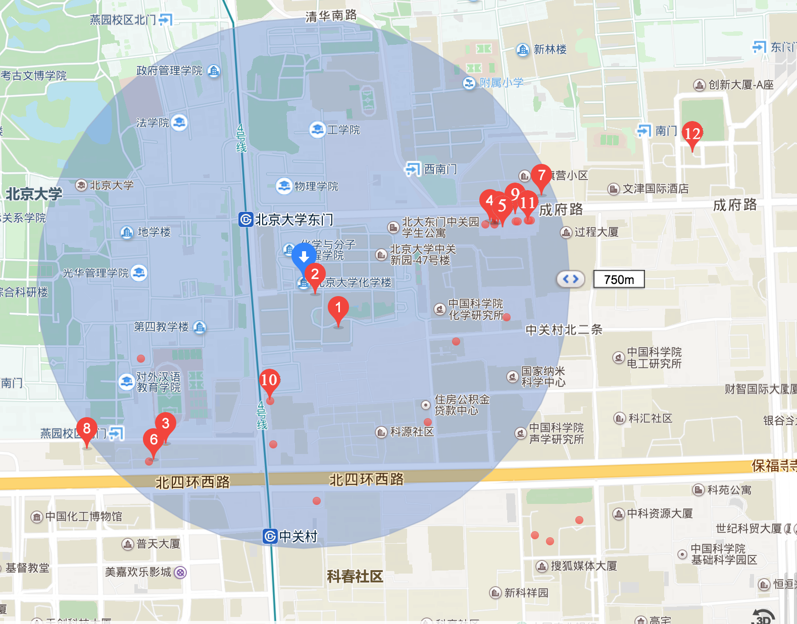
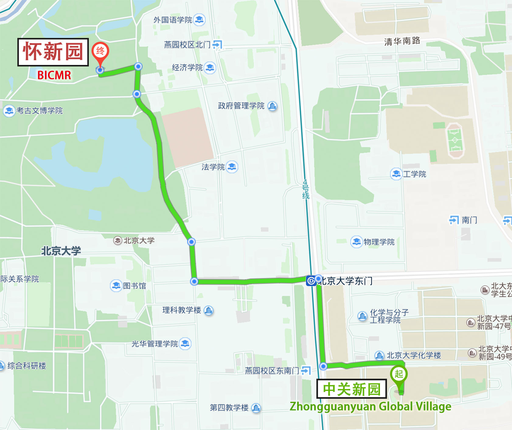

Accommodation
The hotel that we suggest for the mini workshop is Zhongguanyuan global village, Peking University (北京大学中关新园). If you have any trouble making your hotel reservation, please contact us, with detailed information including the dates you would like to stay, room type and so on.
| Name | Room | Map | Booking URL |
|---|---|---|---|
|
北京大学中关新园 Zhongguanyuan global village, Peking University |
five star (Building No.1), four star (Building No.9) |
MapLink, Map | URL |
{kind=link}
In case that you will need to go to the hotel by taxi, here is the Chinese address card (its png version).
{kind=link}
请送我去北京大学中关新园。
地址：北京市海淀区中关村北大街126号（地铁4号线北京大学东门站C口附近）。
Please take me to the Zhongguanyuan global village, Peking University.
Restaurants around PKU
The mini-workshop does not request the registration fee. We will take care of lunches and dinners only for the invited speakers on May 19th (Saturday) and 20th (Sunday). Below are some recommended restaurants around PKU for the other participants. For convenience, they are indicated on the map and listed in the table below.

| No. | English name | Chinese name | Style/Feature |
|---|---|---|---|
| 1 | Heyuan themed restaurant | 和园主题餐厅 | Chinese food, Huaiyang cuisine |
| 2 | Yiyuan themed restaurant | 怡园主题餐厅 | Chinese food |
| 3 | Gudeyi | 谷得一乡土菜 | Chinese food, Shaanxi cuisine |
| 4 | Wufangyuan | 五方院五道口店 | Chinese food, Hunan cuisine |
| 5 | Lashangyin | 辣尚瘾（五道口店） | Chinese food, Sichuan cuisine |
| 6 | Yuzhou | 渝州家厨（中关村） | Chinese food, Sichuan cuisine |
| 7 | café heaven | 咖啡天堂 | Korean food, Coffee |
| 8 | Shiwei | 十未潮汕砂锅粥 | Chinese food, Cantonese cuisine |
| 9 | Lakers | Lakers | Western food, Pizza |
| 10 | Qingfeng Streamed Stuffed bun Restaurant (Zhongguancun) | 庆丰包子铺（中关村） | Chinese food, Baozi |
| 11 | Qingfeng Streamed Stuffed bun Restaurant (Lanqiying) | 庆丰包子铺（蓝旗营） | Chinese food, Baozi |
| 12 | Quanjude Peking Roast Duck | 全聚德 | Chinese food，Peking duck |
